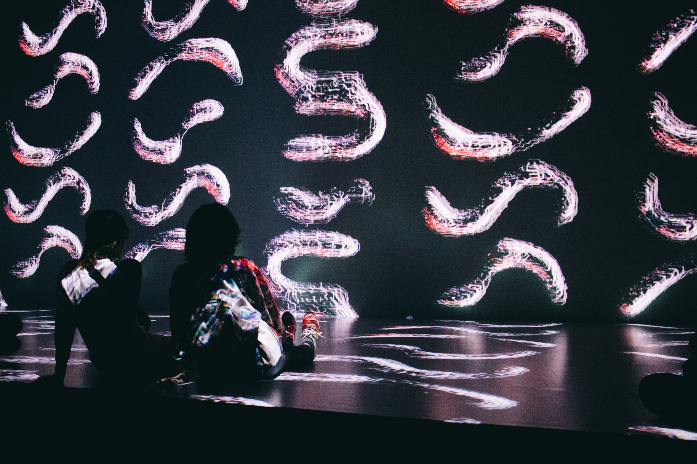
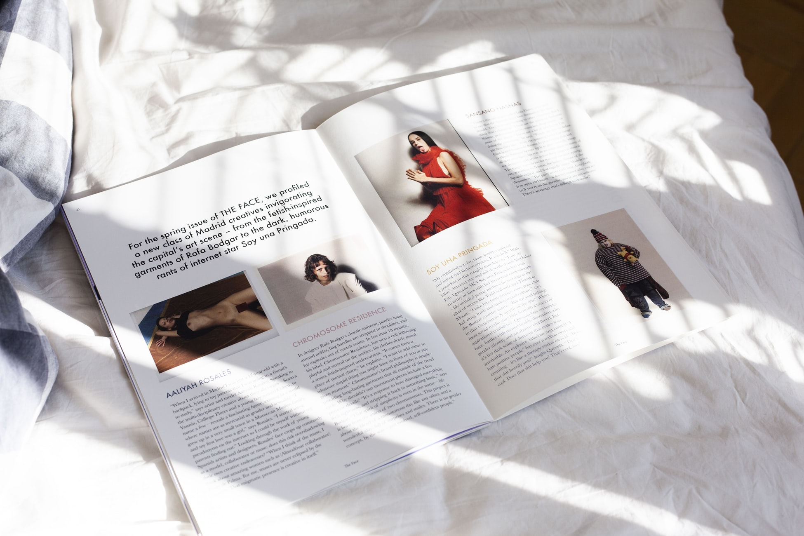
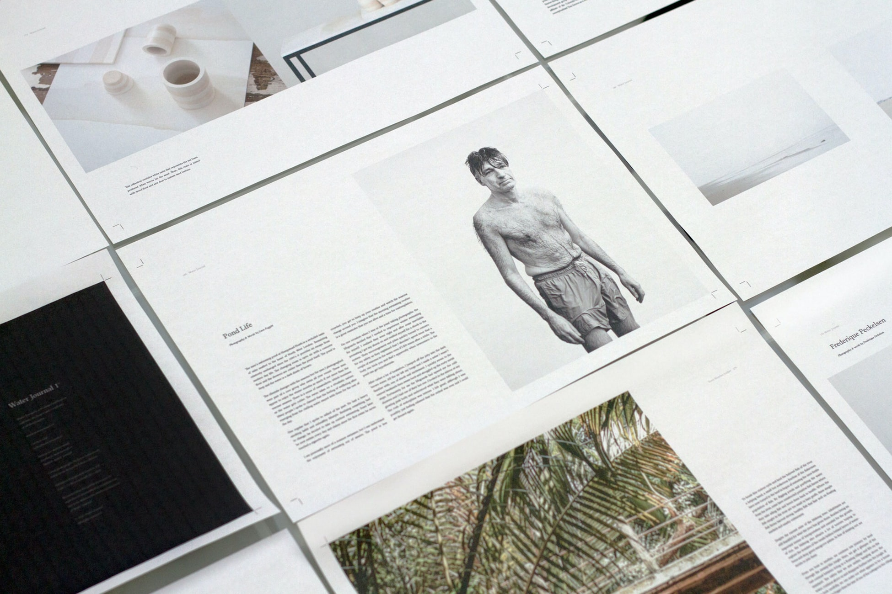
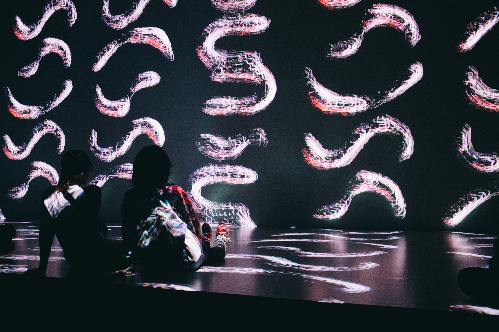
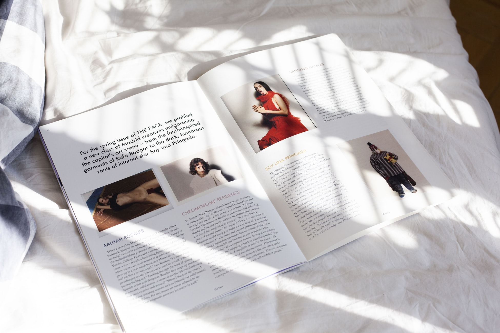
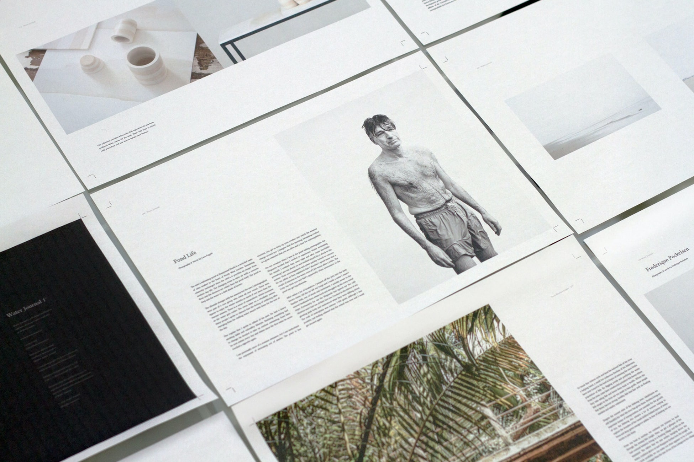

AI는 바실리 칸딘스키가 들은 음악을 알고 있다
구글 아트앤컬처가 바실리 칸딘스키의 추상 회화를 음악으로 변환하는 프로그램을 공개했다. 프랑스 조르주 퐁피두 국립예술문화센터와 협력한 이 프로젝트는 칸딘스키가 남긴 메모를 인공지능이 분석해 당시 그가 음악을 어떻게 이해했는지 학습하는 과정으로 만들어졌다. 트랜스포머 신경망 기술을 적용해 칸딘스키가 1025년 그의 대표 작품 '노랑, 빨강, 파랑'을 그렸을 때 들었을 법한 음악을 시뮬레이션한 것이 특징이다.
결국 이렇게 와버렸다, 2021년 달력
구글 아트앤컬처가 바실리 칸딘스키의 추상 회화를 음악으로 변환하는 프로그램을 공개했다. 프랑스 조르주 퐁피두 국립예술문화센터와 협력한 이 프로젝트는 칸딘스키가 남긴 메모를 인공지능이 분석해 당시 그가 음악을 어떻게 이해했는지 학습하는 과정으로 만들어졌다. 트랜스포머 신경망 기술을 적용해 칸딘스키가 1025년 그의 대표 작품 '노랑, 빨강, 파랑'을 그렸을 때 들었을 법한 음악을 시뮬레이션한 것이 특징이다.

디자인 트렌드를 선도하는 부산
구글 아트앤컬처가 바실리 칸딘스키의 추상 회화를 음악으로 변환하는 프로그램을 공개했다. 프랑스 조르주 퐁피두 국립예술문화센터와 협력한 이 프로젝트는 칸딘스키가 남긴 메모를 인공지능이 분석해 당시 그가 음악을 어떻게 이해했는지 학습하는 과정으로 만들어졌다. 트랜스포머 신경망 기술을 적용해 칸딘스키가 1025년 그의 대표 작품 '노랑, 빨강, 파랑'을 그렸을 때 들었을 법한 음악을 시뮬레이션한 것이 특징이다.
혐오를 멈추기 위한 디자이너들의 목소리
구글 아트앤컬처가 바실리 칸딘스키의 추상 회화를 음악으로 변환하는 프로그램을 공개했다. 프랑스 조르주 퐁피두 국립예술문화센터와 협력한 이 프로젝트는 칸딘스키가 남긴 메모를 인공지능이 분석해 당시 그가 음악을 어떻게 이해했는지 학습하는 과정으로 만들어졌다. 트랜스포머 신경망 기술을 적용해 칸딘스키가 1025년 그의 대표 작품 '노랑, 빨강, 파랑'을 그렸을 때 들었을 법한 음악을 시뮬레이션한 것이 특징이다.